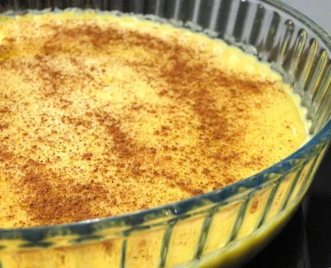

Mingau de milho com flocão

Descrição
Mingau de milho usando flocão
Ingredientes
- 1 colher cheia de sopa de flocão de milho
- 1 colher de chá de amido de milho
- 1 xícara e 1/2 de leite
- 1 colher e meia de açúcar
- 1 pitada de sal (ponta da colher de chá)
Como fazer
- Dissolver o flocão e o amigo de milho no leite frio
- Acrescentar o açúcar e o sal e levar ao fogo mexendo até ferver